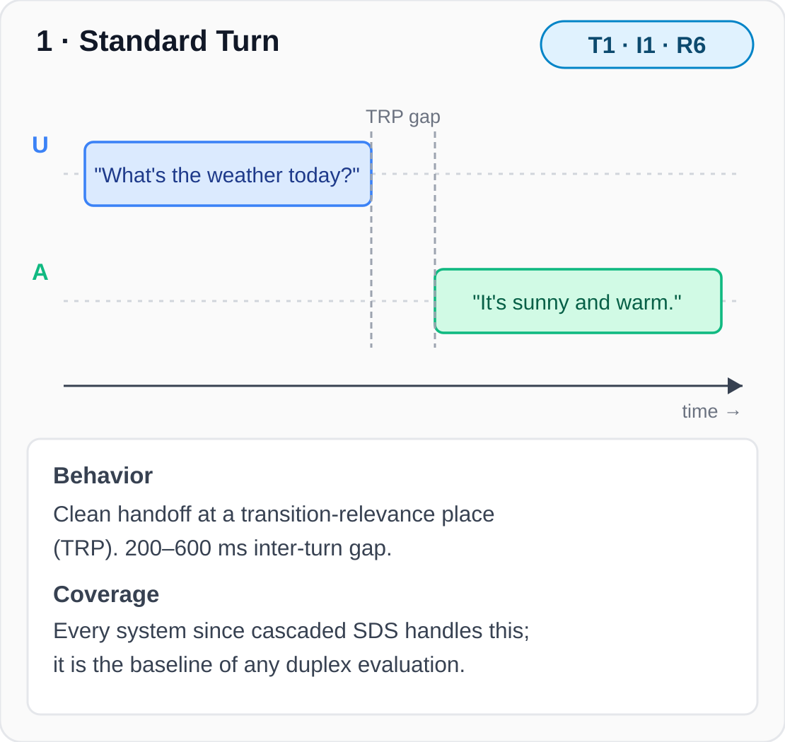
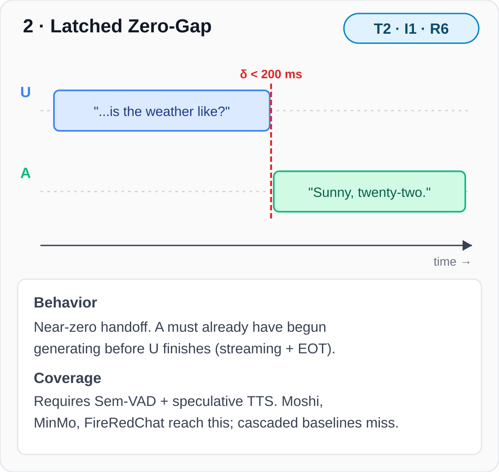
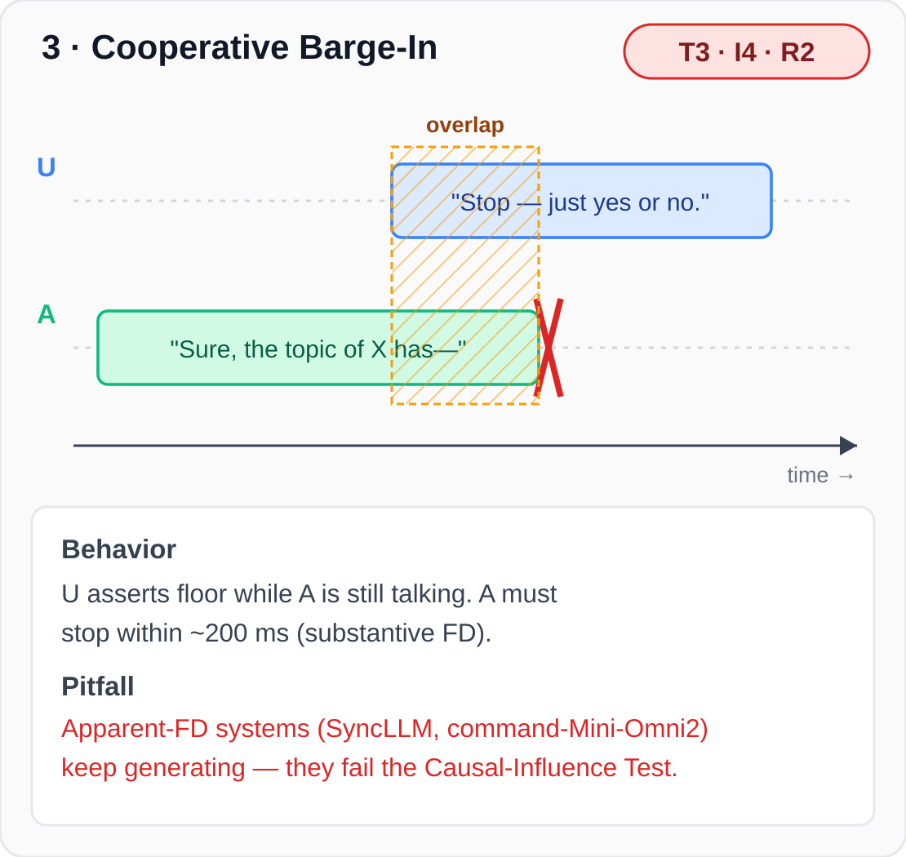
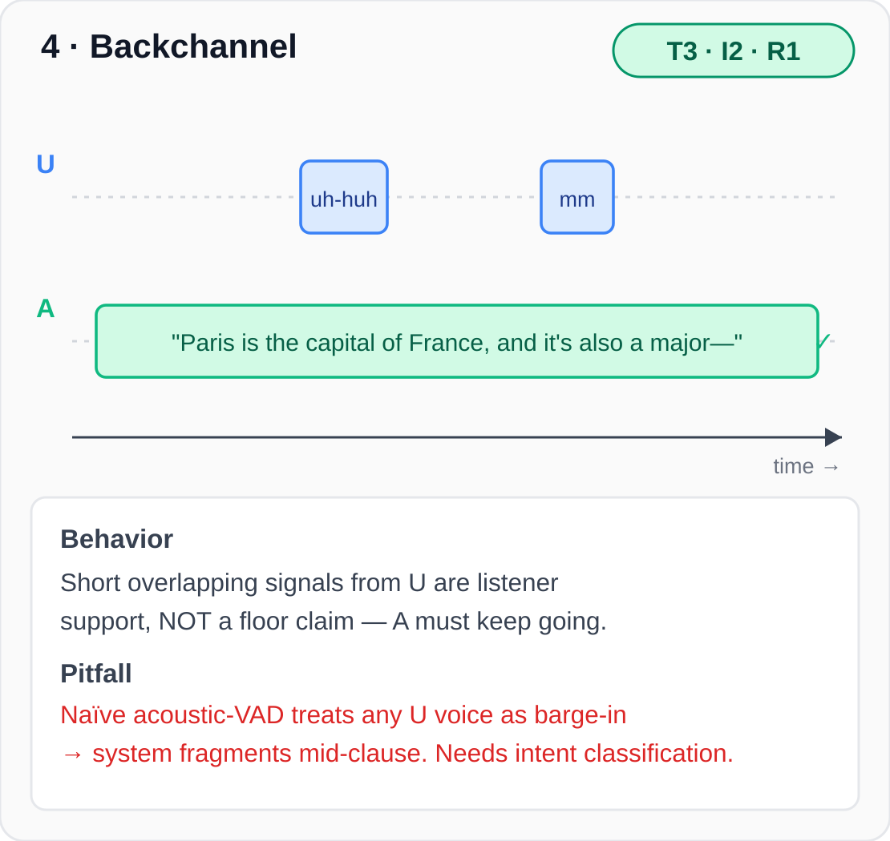
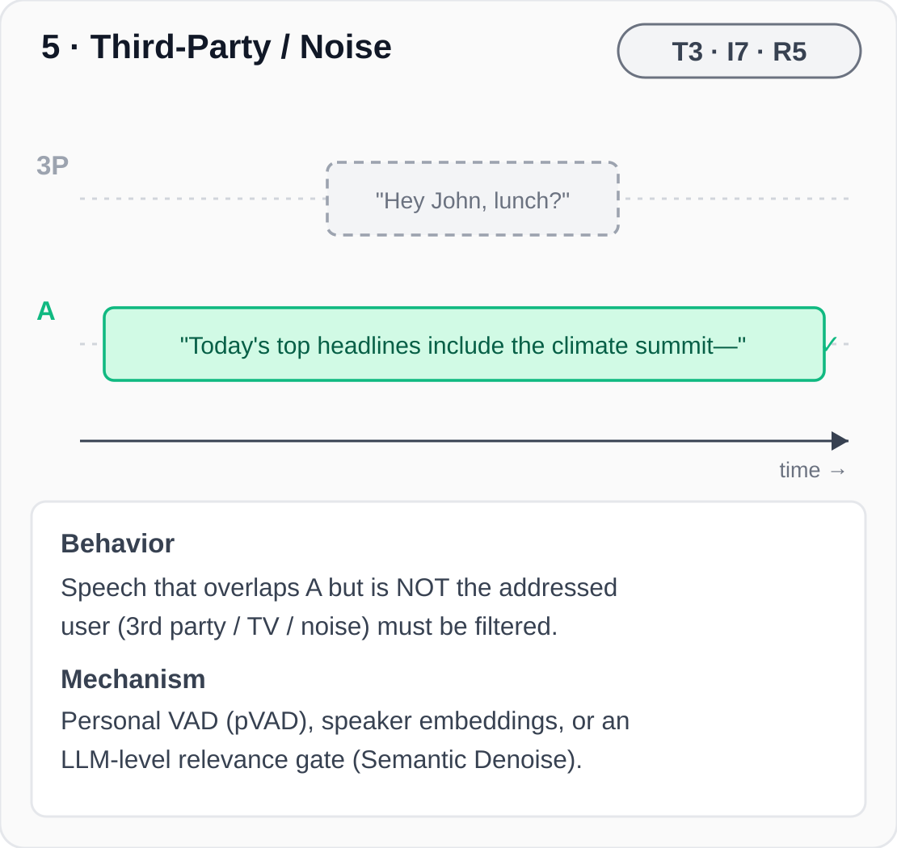
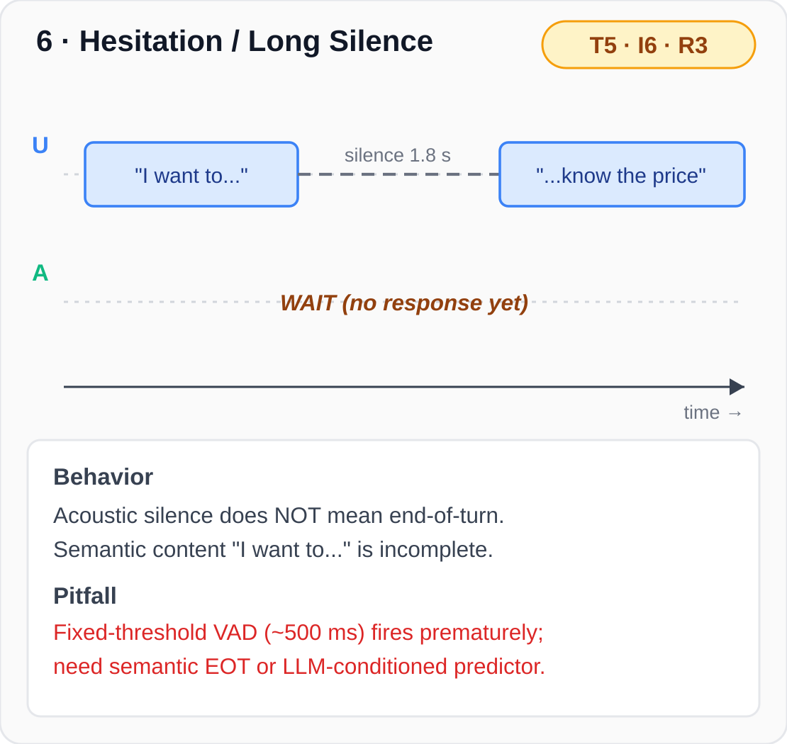

Interactive demo for the T × I × R ontology — each cell shows one canonical scenario as a dual-channel waveform synced to its audio. Click ▶ to play; click any waveform to seek.
Each conversational micro-event = (Temporal · Intent · Response) triplet. Failure modes localise to specific cells in this 3-axis space, making them diagnosable rather than vague.
| T1 | Sequential — 200-1500 ms inter-turn gap |
| T2 | Latched — gap < 200 ms |
| T3 | Overlap-onset — one party begins while the other is talking |
| T4 | Concurrent — both ≥ 1 s sustained overlap |
| T5 | Silence — both quiet ≥ 500 ms |
| I1 | Information — primary content |
| I2 | Backchannel — "uh-huh", "嗯", no floor claim |
| I3 | Repair — self-correction or clarification |
| I4 | Floor-claim — barge-in to take turn |
| I5 | Floor-yield — release turn to other party |
| I6 | Hesitation — mid-utterance pause, not done |
| I7 | Third-party — non-addressed speech / noise |
| R1 | Continue — keep talking |
| R2 | Stop & listen — yield within ~200 ms |
| R3 | Wait — stay silent, user not finished |
| R4 | Acknowledge — emit backchannel only |
| R5 | Ignore / filter — drop non-addressed audio |
| R6 | Initiate — start a new turn |
(I2, R1) = "user backchannel, assistant continues" is correct
during T3 (overlap-onset) but wrong during T1 (sequential turn,
where the same "uh-huh" might be the user yielding/closing).





